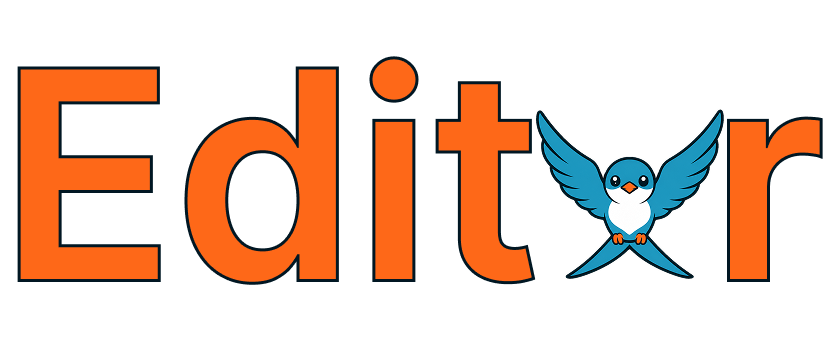

A WYSIWYG Markdown editor for the terminal — AI-assisted, 100% Swift, zero dependencies. macOS & Linux.
curl -fsSL https://raw.githubusercontent.com/pixdeo/editxr/main/install.sh | bash
Headings, lists, tables, and code styled in place — not in a split preview. The line you're on stays plain, editable text.
Select a section, describe the change, and accept or reject it as a red/green inline diff. No chat thread, nothing lands unapproved.
LM Studio (local), OpenAI, OpenRouter, or an offline mock that needs no backend at all.
Clay, Dracula, Nord, Catppuccin, Tokyo Night and more — picked from a rounded command palette.
A native Swift binary. It opens instantly and stays fast on large files. macOS & Linux.
Incremental find, HTML export, syntax highlighting, word wrap, and per-file cursor memory.
editxr notes.md — open or create a file.One line (builds from source; needs Xcode or the Command Line Tools, or Swift on Linux):
curl -fsSL https://raw.githubusercontent.com/pixdeo/editxr/main/install.sh | bash
Homebrew:
brew install pixdeo/tap/editxr
Or grab a signed, notarised binary from the releases.